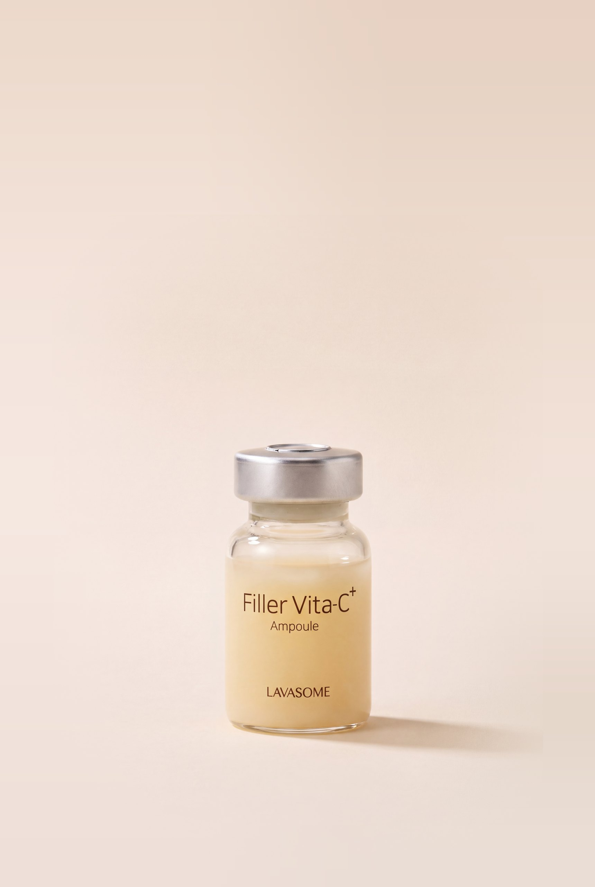
제주의 아침을 담은
순수 비타민 C 앰플
고함량 비타민 C를 무수 처방으로 지켜,
맑고 생기 있는 피부로.
LAVASOME필러 비타씨 플러스 앰플
,000ppm
순수 비타민 C 13.5%
고함량 비타민 C가 칙칙한 피부 톤을 맑게 밝히고,
생기 있는 피부로 가꿔 줍니다.
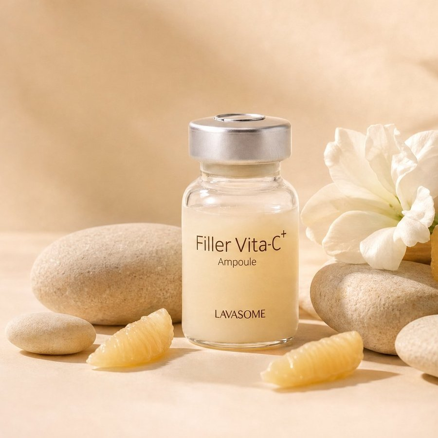
제주에서 온
두 가지 베이스
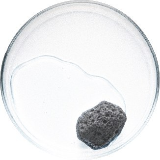
Jeju Lava Seawater제주 용암해수
현무암층을 지나며 미네랄을 머금은 물.
피부에 촉촉한 수분감을 더합니다.
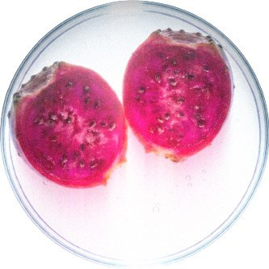
Opuntia Ficus-Indica백년초
제주 손바닥선인장의 열매.
거칠어진 피부결을 매끄럽게 정돈합니다.
피부 본연의 빛을 살리는
다섯 가지 솔루션
- 01
미백순수 비타민 C 13.5%
칙칙한 피부 톤을 맑고 환하게
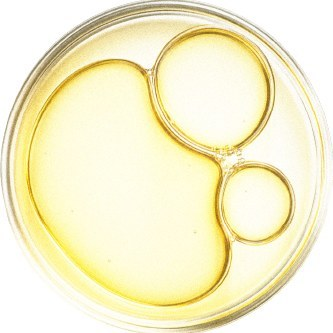
- 02
수분제주 용암해수 · 베타글루칸
촉촉한 수분감을 오래 유지
- 03
주름 개선펩타이드
탄력 있는 피부결로
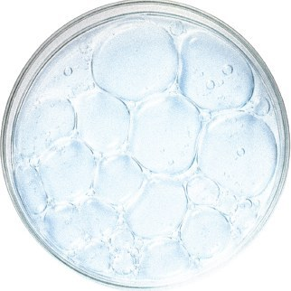
- 04
항산화글루타치온
지친 피부에 생기를
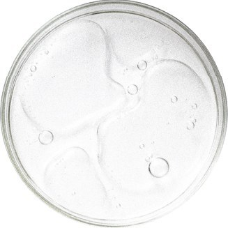
- 05
피부결 개선백년초
거칠어진 결을 매끄럽게
비타민 C, 함량이 높다고 좋은 것이 아닙니다.
피부가 제대로 받아들이는 구조가 중요합니다.
- 01 Potency13.5%
고함량
순수 비타민 C
135,000ppm - 02 ConditionpH 3.5
흡수 조건
비타민 C가 잘 작용하는
약산성 설계 - 03 Stability무수
안정화
물을 빼 산화를 늦추는
무수 베이스
pH 4를 넘지 않는 약산성 조건에서 비타민 C가 피부에 가장 잘 흡수됩니다.
밖에서는 지키고,
닿는 순간 전합니다
- 외층Outer
- 수분을 차단하는 무수 베이스가 순수 비타민 C를 감쌉니다. 개봉 전까지 산화가 시작되지 않습니다.
- 내층Inner
- 피부에 닿는 순간 유효 성분이 풀립니다. 농도가 아니라 도달이 목적입니다.
색으로 증명하는 차이
비타민 C는 산화되면 색이 변합니다.
라바섬은 가혹한 조건에서도 처음의 크림빛을 지킵니다.
고온 가혹 조건45°C · 16주
라바섬 필러 비타씨 플러스
16주 후에도 크림빛 유지
일반 비타민 C 제형
시간이 지나며 산화 · 갈변
*자사 비교 시험 · 시험 조건과 비교 제형 정보 기재
자연이 전하고,
임상이 증명한 변화
피부 톤 밝기 개선
+%
주름 개선
+%
*인체적용시험 결과 · 시험기관 ○○○ · 시험기간 20○○.○○.○○–○○.○○ · 대상 성인 ○○명
*개인에 따라 차이가 있을 수 있습니다.
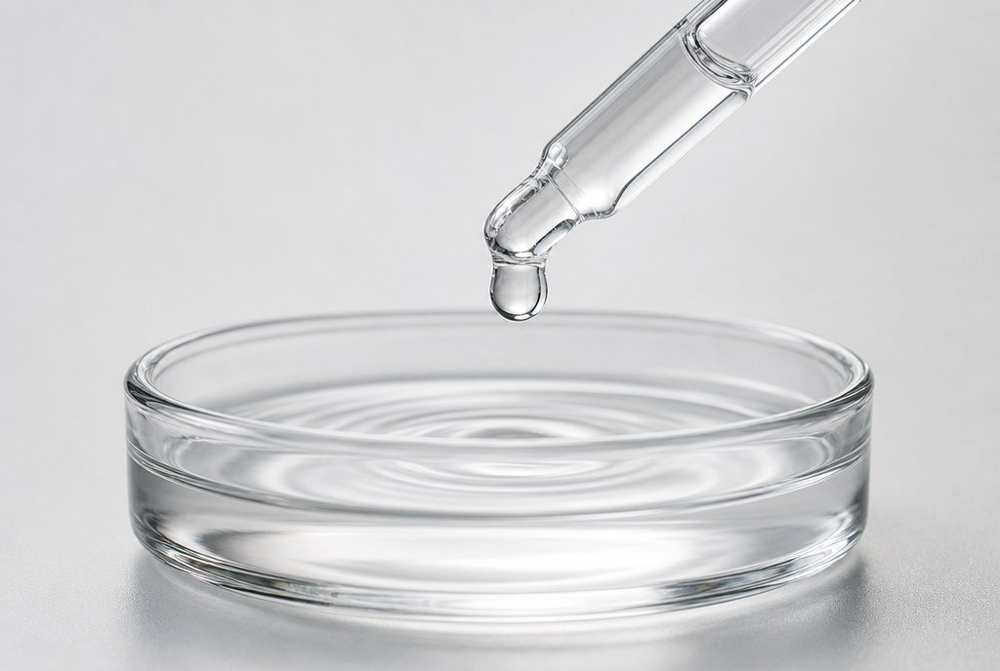
고농도인데
사용감은 순합니다
- 흡수감Texture
- 얇게 퍼지고 빠르게 정리됩니다
- 향Scent
- 인위적인 향을 더하지 않았습니다
- 색감Tone
- 실제 제형 그대로의 옅은 크림빛입니다
비타민 C의 신선함을 담은
특별한 구성
-
실링 캡
개봉 전까지
공기를 막아 줍니다 -
투명 유리 바이알
제형의 색을
그대로 확인합니다 -
앰플 전용 캡
필요한 만큼
위생적으로 덜어 냅니다 -
전용 오프너
실링 캡을
손쉽게 엽니다
*실제 구성품 명칭·형태 확인 필요
사용 방법
-
Step 01
오프너 끼우기
전용 오프너 끝을 실링 캡 가장자리 홈에 끼워 주세요.
-
Step 02
캡 들어 올리기
바이알을 잡고 오프너를 천천히 들어 올려 실링 캡을 떼어 냅니다.
-
Step 03
전용 캡 끼우기
안쪽 마개를 뺀 뒤 앰플 전용 캡을 끝까지 눌러 끼워 주세요.
-
Step 04
흔들어 사용하기
가볍게 흔든 뒤 적당량을 덜어 얼굴 전체에 부드럽게 펴 바릅니다.
라바섬 데일리 스킨케어 루틴
비타씨 플러스로 피부 톤을 정돈한 뒤,
고민에 맞는 앰플을 더해 보세요.
클렌징
세안 후 결 정돈
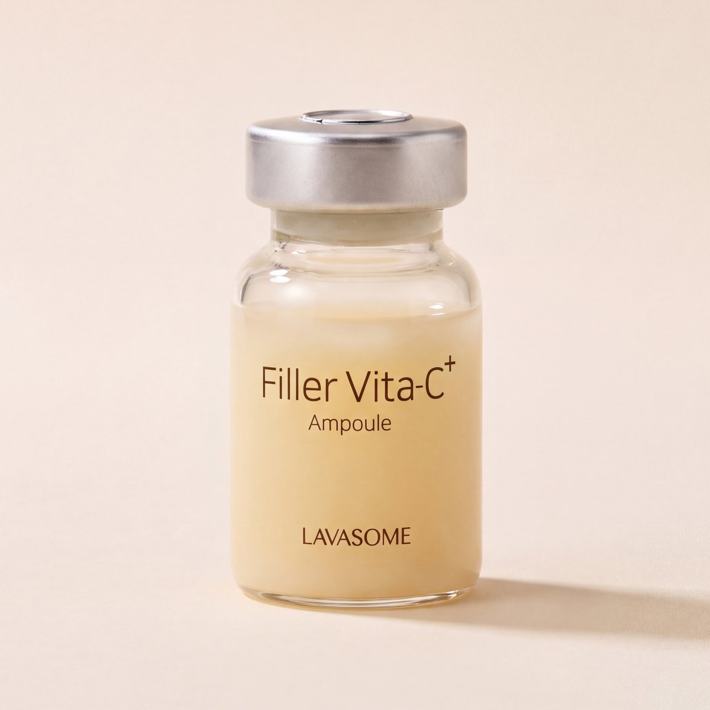
필러 비타씨
플러스 앰플
아침 · 저녁
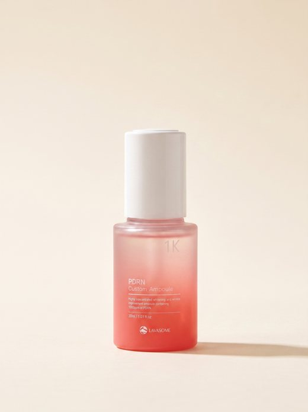
고민별 앰플
Calming 50 · PDRN 1K
HA 90 · 바쿠치올 5K
크림
수분 마무리
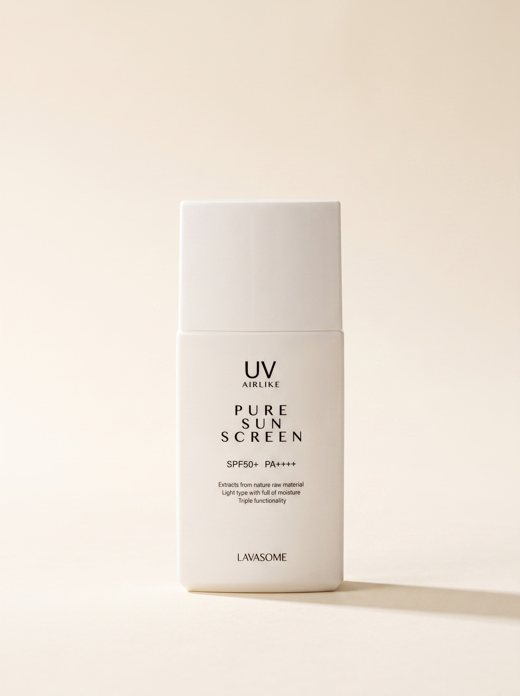
퓨어 선스크린
아침 마지막 단계
*비타민 C 제품을 아침에 사용할 때는 자외선 차단제를 함께 사용해 주세요.
이런 피부에 추천합니다
- 칙칙하고 생기 없는 피부가 고민인 분
- 기미 · 잡티 케어가 필요한 분
- 탄력 저하 · 잔주름이 신경 쓰이는 분
- 순하면서도 효과적인 비타민 C 앰플을 찾는 분
제품 정보
| 제품명 | 필러 비타씨 플러스 앰플 (Filler Vita-C⁺ Ampoule) |
|---|---|
| 용량 | ○○ml × ○개 |
| 사용기한 | 제조일로부터 ○○개월 / 개봉 후 ○개월 |
| 주요 성분 | 순수 비타민 C 13.5% (135,000ppm), 제주 용암해수, 백년초 추출물, 글루타치온, 베타글루칸, 펩타이드 |
| 전성분 | 전성분 표기 |
| 기능성 | 미백 · 주름 개선 기능성 심사(보고) 여부 기재 |
| 제조업자 / 책임판매업자 | 제조업자 / 주식회사 라바섬 |
| 고객센터 | 1544-6743 (평일 09:00–18:00) |
| 사용 시 주의사항 |
|